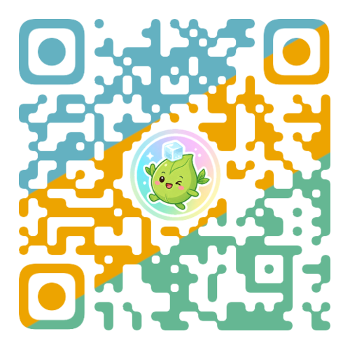

兴趣诊断
从投入经历、情绪触发、素材积累和关心的人中寻找线索。
我们不从“做一个看起来厉害的 App”出发，也不把项目当作申请活动的装饰。导师会和学生一起辨认长期投入、强烈感受、已有材料和想服务的人，再把模糊的想法变成可以研究、体验和验证的作品。
从投入经历、情绪触发、素材积累和关心的人中寻找线索。
把“我想做”改写成一个可观察、可追问的真实问题。
不默认做网站；游戏、数据可视化、田野研究或空间设计都可以。
先做能让人体验关键机制的第一版，再验证它是否成立。
记录测试和改动，让项目成为持续探索而非一次展示。
从螳螂捕食配偶的自然现象出发，学生用多分支剧情、配乐和角色设定，让玩家体验“人类道德判断”与“生物本能”的张力。
把“人为什么无法完全互相理解”变成有限字数回复、关系背景和概率误差共同作用的可体验机制，让抽象理论进入日常场景。
通过拖拽配方、心情配茶和可分享海报，把原本遥远的茶文化，变成年轻人可以亲手参与的日常体验。
学生将塔罗理解为非评判式的对话入口：它不替人做决定，而是用开放问题帮助用户整理情绪、处境和需要。
把复杂选举数据库转化为可筛选的交互图表，并补充历史和政策语境，让数据可以被更广泛的读者理解和讨论。
围绕独自练琴时“知道分数却不知道怎么练”的困境，学生设计录音反馈、错误片段回放、练习建议与成长记录。
AI 可以帮助检索、原型化、编程、表达和测试；但问题选择、事实核验、价值判断、关键取舍，以及对他人的责任，始终由学生承担。
无论是写作、音乐、茶、运动、自然、历史、游戏或社会议题，都可以从真实投入中找到项目起点。
“不知道喜欢什么”不是问题。我们会从日常行为、经历和感受中，一起找到值得继续追问的线索。
项目会沉淀为作品、过程档案与反思材料；它可以自然进入作品集、面试和升学叙事，但不以包装为目的。
学生会学习调研、建模、表达、测试和迭代，也会理解一件作品能做什么、不能做什么。
带着你正在投入、在意或反复思考的事情来，我们一起找到它的第一步。
